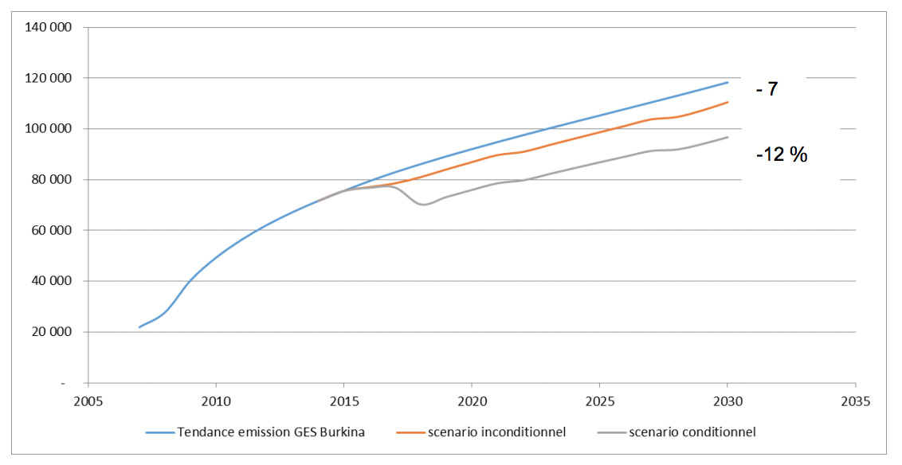
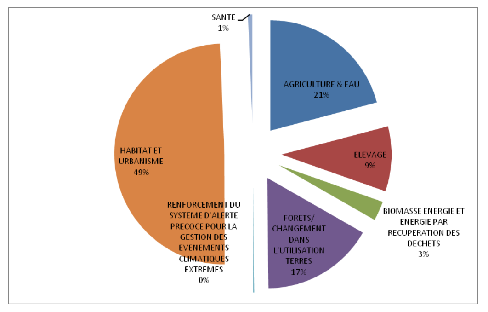

September 2015
France will host the 21st Conference of Parties of the United Nations Framework Convention on Climate Change (COP21/CMP21), which will take place in Paris in December 2015 and should result in a new international agreement on the climate that is applicable to all countries. The entire international community expects this agreement to be universal and lasting. It should give the economic and political signals for our planet’s economic development model to set out on a new path leading to carbon neutrality before the end of the century and to observance of the 2°C objective (i.e. keeping global warming at temperatures below +2°C).
The principal goal of COP21, from November 30 to December 11, 2015, is to conclude an agreement that will commit 195 countries to reduce their greenhouse gas (GHG) emissions. The end objective is for the contributions by these countries (which vary from country to country) to make it possible to stabilise climate warming due to human activities below 2°C between now and 2100 (in comparison to the pre-industrial era). Each country will renew its commitments to the Climate Change Convention (UNFCCC) in a document called Intended Nationally Determined Contributions or INDC (CPDN in French) between now and the end of October 2015.
The national objectives encompass two types of objectives:
The mitigation objectives, the aim of which is to reduce greenhouse gas emissions, for example by modifying the production techniques that are used. The Burkina Faso INDC gives quantifiable factors and notes the reference year, the period of commitment and the implementation schedule and specifies the methodologies used to estimate GHG emissions.
The adaptation objectives, the aim of which is to reduce the vulnerability of natural and human systems to the effect of current or expected climate changes.
The contribution to this second part of the objectives is voluntary, but important to Burkina Faso, and thus is to be presented in a separate scenario: Integrated Adaptation.
Insert #1
According to the ministry in charge of sustainable development, the principles on which the national contributions are based are:
Ambition: The contributions will have to go beyond the countries’ current national commitments. The current commitments are part of the second commitment period of the Kyoto Protocol - notably the case of the European Union – or correspond to voluntary national actions under the Copenhagen agreement and the Cancun accords.
Fairness and differentiation: The contributions are examined in light of the national circumstances of each country. The least developed countries (LDCs) and the small island developing states (SIDS) benefit especially from a certain degree of flexibility in preparing their INDC in view of their limited capabilities.
Transparency: The contributions reported by the countries are published as they are readily available on the UNFCCC site. A synthesis report of all the parties’ contributions will be presented by the UNFCCC secretariat on November 1, 2015, on the basis of the INDC’s received as of October 1st.
Burkina Faso’s National Assembly on the Environment and Sustainable Development, held in November 2011, strongly recommended the development of a National Sustainable Development Policy (NSDP) accompanied by a law. Prepared in 2013, the NSDP was an effective framework for the Strategy for Accelerated Growth and Sustainable Development (SAGSD). This economic framework document, together with “Outlook Burkina 2025” and policy framework instruments, contribute to place the concept of sustainability at the heart of public action and the activities of other non-state actors (technological and financial partners, civil society organisations, non-governmental organisations and the private sector) in a socioeconomic development drive that generates growth and fairly distributes revenues in the medium and long term in climatically high-vulnerability sectors such as those identified in National Communication 2.
Burkina Faso ratified the UNFCCC in 1993 and the Kyoto Protocol in 2005. Up to now, in response to the provisions of these protocols, it has developed and adopted a number of policy and strategy documents relating to climate change. These include:
To address and follow up climate change issues, a Permanent Secretariat of the National Council for Management of the Environment (SP/CONAGECE) was created within the ministry responsible for the environment and which will subsequently be transformed into the National Council for the Environment and Sustainable Development (SP/CONEDD) with expanded responsibilities.
In 1995, Burkina Faso established the Inter-Ministerial Committee to Implement the Actions of the United Nations Framework Convention on Climate Change (IMCIAC). This committee has been fully involved in the preparation of the first National Communication on climate change.
Faced with the degradation of the ecosystems, the recurrence of food crises and the adverse impacts of climate change on the environment, populations and livestock, the Government of Burkina Faso, with the support of the UNDP as the executive agency for the World Environmental Fund (WEF), initiated in 2005 the formulation of its National Action Program for Adaptation to climate change and variability. The NAPA was adopted at the national level in 2007. In this context and under the leadership of SP/CONEDD, three adaptation projects were developed and carried out between 2008 and 2013 with the support of Denmark and Japan and the World Environmental Fund (WEF). Thus, NAPA responded to an urgent situation in which adaptation was principally directed to those who are most vulnerable, particularly rural populations.
Building on the achievements of the NAPA, on the one hand, and, on the other, to initiate a comprehensive medium- and long-term approach to adaptation to climate change and expand the national process to all of the stakeholders in development, Burkina embarked on the process to develope a National Adaptation Plan (NAP) structured around the results of analysing the vulnerability to climate change of the sectors identified as priority (agriculture, livestock breeding, water, forests and natural ecosystems, energy, infrastructure and housing, health etc.) and climate change scenarios in the 2025-2050 time period.
The need for quantitative evaluation of the mitigation potential led Burkina Faso to develop a NAMA framework in 2008, in this case the National Rural Sector Program (NRSP). The NRSP is part of the drive for short, medium and long-term development programming carried out through the Outlook Burkina 2025 study, the development of the National Land-Use Planning Scheme (NLUPS) and, more recently (2010), the adoption of the Strategy for Accelerated Growth and Sustainable Development (SAGSD), which replaced the Anti-Poverty Strategic Framework (APSF).
The NRSP, which targeted the year 2015, is a federation of sectoral programs of the departments of agriculture, livestock raising, water, the environment and quality of life. Within this framework, the mitigation potential for the period 2008-2015 was estimated at 9,174,816 eq.t.CO2 of GHG, or 1,200,000 eq.t.CO2 per year.
The proposed mitigation measures contribute to the achievement of the Government’s objective, i.e. the restoration of degraded land at the rate of 30,000 ha/yr, the increase of natural forests from 170,00 to 500,000 ha, the reduction of forest areas burned by wildfires from 30% of the national territory to 20%, the development of village hunting areas through the awareness and training of the population, and the spread of knowledge regarding techniques for sustainable management of natural resources.
Pursuant to article 4 and 12 of the United Nations Framework Convention on Climate Change (UNFCCC), Burkina Faso developed a National Communication containing the measures aimed at mitigation or appropriate adaptation to climate change. In this context, a Second National Communication was developed in 2014 in accordance with the directives of decision 17/CP 8 adopted by the eighth session of the Conference of Parties to the UNFCCC. Since the process of its development began after 2006, the inventory data was based on the data for 2007 as the reference year. Pointing out the changes in climate, the Second National Communication completes and updates certain data already brought to the attention of the international community in the initial Communication of 2001, which the UNFCCC web site refers to May 2002.
The INDC of Burkina Faso, a weak emitter country, is one of the few that have both characteristics of the INDCs, namely an outcomes approach and an actions/projects/activities approach.
This results in a Mitigation component that has taken into consideration only the activities that lead to credited emission results, the objectives of which have been oriented from the start toward the reduction of greenhouse gas emissions and in particular the carbon equivalent. One example of these initiatives is represented by the REDD + / FIP, the NAMA initiative and the potential CDM projects in the growth sectors such as mining. These initiatives, dedicated principally to the reduction of greenhouse gas, make up the Conditional Hybrid Mitigation / (Adaptation) scenario.
Furthermore, Burkina’s INDC contains an Adaptation component that makes this INDC somewhat unique and ambitious since the analysis of the adaptation options with their special investments and “vulnerable” sectors to the search for resilience has led to an Integrated Adaptation Scenario. It is from this component that the projects/activities/actions approach emerges. It is strongly justified by the fact that the “rural sector”, consisting of the water-agriculture-forest-land use subsectors, is at the same time the principal engine of the Burkina economy (it provides the livelihood of more than 80% of the population) and the sector most vulnerable to the effects of climate change.
Thus, this component consists of projects whose objective is not PRINCIPALLY the reduction of GHG (mainly through carbon sequestration), but the enhancement of environmental services such as food security, water and soil conservation, sustainable agriculture, the development of non-ligneous forest products, including medicinal plants, the promotion of wood and metal free architecture (“Nubian vaults”), etc. As a bonus to the mitigation component, these projects result in the medium and long term in considerable reductions of GHG, which even exceed the results of mitigation efforts.
The “Mitigation” team carried out its work on the basis of the following methodology:
This methodology is reflected in the report as follows:
The following table summarises the mitigation scenarios.
Table 1. Reduction of emissions and associated investment costs under the mitigation scenarios
| Scenarios / sectors | Reduction of emissions at the 2030 horizon | Investment cost (in US$) | |
|---|---|---|---|
| In numbers (GgCO2 eq.) | In % of reduction | ||
| BaU (subtotal): | 118,323 | ||
| Unconditional | |||
| Agriculture | 7,236.3 | 6.1% | 21,646,581 |
| Waste | - | ||
| Energy | 572.0 | 0.5% | 1,063,272,580 |
| Subtotal Unconditional | 7,808.3 | 6.6% | 1,084,919,161 |
| Conditional | |||
| Agriculture | 10,560 | 8.9% | 64,939,743 |
| Waste | 76.30 | 0.1% | 81,228,000 |
| Energy | 3,130.00 | 2.6% | 609,866,667 |
| Subtotal Conditional Hybrid | 13,766.30 | 11.6% | 756,034,410 |
| Subtotal Mitigation | 21,574.63 | 18.2% | 1,840,953,571 |
Source, Authors’ compilation, July 2015.
Three Mitigation scenarios have been considered in order to evaluate the emissions trends and the possible reductions on the basis of a reference situation and the potential for financing:
The chosen reference year is 2007, the date when the second report on greenhouse gas inventories in Burkina Faso was completed. The future projections under the various scenarios are made on the basis of this reference year and the appropriate parameters resulting from the previous development of the socioeconomic situation (trend-based) or the forecast-based assumptions (unconditional and conditional scenarios).
Burkina has chosen 2030 as the target year, given that this date coincides with the second Millennium Development Goals meeting. In addition, the government of Burkina Faso has adhered to the “Sustainable Energy for All (SE4ALL)” initiative of the United Nations Secretary General, which aims to achieve three major objectives between now and 2030:
The parameters that can influence the trends have been reviewed. In cooperation with the agency responsible for statistics, the National Institute of Statistics and Demography (INSD), the following parameters have been selected as relevant.
Table 2. Types of GHG emissions by sectoral trends
| Sectors | GHG | Projection parameters used |
|---|---|---|
| Agricultural soils trend | NO2 | Development of importation of products for soils and crops |
| Agricultural waste burned in the field + controlled burning of savannah trend | NOx CO CO2 | Historical INSD trend |
| Enteric fermentation trend | CH4 | Rate of increase of cattle |
| Manure use trend | CH4 | Rate of increase of cattle |
| Land use change and forestry trend | CO2 CH4 N2O NOx CO | Historical INSD trend |
| Liquid waste management trend | CH4 | Rate of population growth |
| Solid waste management trend | CH4 | Rate of population growth |
| Transportation trend | CO2 | Development of fuel imports |
| Electricity production trend | CO2 | Development trend |
| Manufacturing industries trend | CO2 | Rate of growth of industrial GDP |
| Residential trend | CO2 | Rate of growth of butane gas and kerosene |
| Industrial processes trend | CO2 | Historical INSD trend |
Source: Authors, July 2015.
The reference situation is that of the second Burkina Faso National Commission of 2014 (in which the GHG inventories refer to the data for 2007) within the framework of the UNFCCC. Table 3 below provides an indicative summary of the reference situation (total and relative emissions by emissions source).
Table 3. Reference situation for GHG emissions
| Category | Principal gases emitted | GHG emissions (GgCO2 eq.) 2007 | As a percentage of total emissions |
|---|---|---|---|
| Agricultural soils | N2O | 8,239 | 37.6% |
| Enteric fermentation | CH4 | 9,517 | 43.4% |
| Agricultural waste burned in the field + controlled burning of savannah | CO2, NOx, CO | 189 | 0.9% |
| Manure use | CH4 | 1,196 | 5.5% |
| Land use change and forestry | CO2, CH4, N2O, NOx, CO | 250 | 1.1% |
| Solid waste management | CH4 | 667 | 3.0% |
| Liquid waste management | CH4 | 245 | 1.1% |
| Transportation | CO2 | 782 | 3.6% |
| Electricity production | CO2 | 350 | 1.6% |
| Residential | CO2 | 60 | 0.3% |
| Manufacturing industries trend | CO2 | 118 | 0.5% |
| Industrial processes | CO2 | 303 | 1.4% |
| GHG total for country | 21,916 | 100% |
Source: Burkina Faso National Communication, 2014.
Analysis of the current trend scenario shows that Burkina’s GHG emissions are going to continue to grow significantly. At the 2030 horizon, the emissions level will increase by a factor of five compared to 2007 and by a factor of almost 1.6 compared to 2015 (table 4 below).
Table 4. Overall trend evaluation of GHG status from 2007 to 2030
| GHG emissions by category (Gg of CO2 eq) | 2007 | 2015 | 2020 | 2025 | 2030 |
|---|---|---|---|---|---|
| Agriculture sector, forestry and land use trend | 19,391 | 71,436 | 85,545 | 95,561 | 103,424 |
| Solid waste management | 667 | 852 | 993 | 1,156 | 1,347 |
| Liquid waste management | 245 | 313 | 364 | 424 | 494 |
| Transportation trend | 782 | 1,447 | 2,439 | 4,110 | 6,925 |
| Electricity production trend | 350 | 648 | 1,476 | 2,487 | 4,191 |
| Residential trend | 60 | 96 | 128 | 172 | 230 |
| Manufacturing industries trend | 118 | 175 | 223 | 285 | 363 |
| Industrial processes trend | 303 | 667 | 894 | 1,121 | 1,348 |
| Total | 21,916 | 75,633 | 92,062 | 105,316 | 118,323 |
Source: Authors, July 2015.
With regard to the projects and programs selected in the unconditional and conditional scenarios, the results of the projections shown below give the portion of reductions that occur in comparison to the current trend scenario, which is also called “Business as Usual” (BAU). It should be recalled that, like several developing countries, the low level of ownership and mastery of technologies goes hand in hand with the very low level of development of countries such as Burkina Faso and the low level of their GHG emissions. Despite all efforts, the urgency of dealing with recurrent crisis situations in several sectors requires the use of low-cost technologies available in the market, which are quite often less appropriate for local or global environmental protection (emergency thermal power plants very frequently financed at the time of large-scale load shedding and social movements, dependence on obsolete means of transportation, agricultural techniques with little technological input that consume space and manpower, poor waste management etc.). Hence there is a preference to think of GHG reductions in comparison to a possible trend rather than in comparison to a reference year that we see as unrealistic.
Table 5. Change in emissions (BaU) and percentage of reduction by scenario
Source: Authors, July 2015.
| 2007 | 2015 | 2020 | 2025 | 2030 | |
|---|---|---|---|---|---|
| BaU (in Gg) | 21,916 | 75,633 | 92,062 | 105,316 | 118,323 |
| Unconditional scenario (reduction in Gg) | - | 5,133 | 6,608 | 7,808 | |
| Unconditional scenario (reduction in %) | 0% | 5.58% | 6.27% | 6.60% | |
| Conditional scenario (reduction in Gg) | 10,953 | 11,829 | 13,766 | ||
| Conditional scenario (reduction in %) | 0% | 11.90% | 11.20% | 11.60% |
The curve below better illustrates these scenarios.
Figure 1. Illustration of GHG emissions trends in different scenarios

Key: Blue line: Burkina GHG emission trend; orange line: Unconditional scenario; grey line: Conditional scenario
Table 6 below gives a breakdown of the reductions in the unconditional scenario. It may be seen that the sectoral mitigation is principally due to projects and programmes in agriculture, forestry and changes in land use (between 6 and 7% from 2020 to 2030), technology choices in the electrical industry (between 20 and 12% from 2020 to 2030) and energy efficiency in the manufacturing industries (3% in both 2020 and 2030). These reductions are relative to the BAU trend in the sector.
Table 6. Breakdown of GHG reductions (GgCO2 eq. and %) in the unconditional scenario compared to the current trend scenario
| Years | 2015 | 2020 | 2025 | 2030 | ||||
|---|---|---|---|---|---|---|---|---|
| Sector | Gg | % | Gg | % | Gg | % | Gg | % |
| Agriculture, forestry and land use | - | 0% | -4,809 | -6% | -6,209 | -6% | -7,236 | -7% |
| Solid wastes | - | - | - | – | ||||
| Transportation | -5.86 | -0.40% | 29.3 | -1.20% | 29.3 | -0.71% | 29.3 | -0.42% |
| Electricity production | 22.18 | 284.3 | -19.26% | 344.4 | -13.85% | 493.04 | -11.76% | |
| Residential | 0.36 | -0.37% | 10.38 | -8.10% | 25.62 | -14.93% | 49.71 | -21.65% |
| Energy in the manufacturing industries | 5.24 | -3.00% | 6.69 | -3.00% | 8.54 | -3.00% | 10.9 | -3.00% |
Source: Authors, July 2015
Similarly, table 7 below gives a breakdown of the reductions under the conditional scenario. It may be seen that in 2030, again in comparison to the BaU scenario, the sectoral mitigation would come principally from projects and programmes in agriculture, forestry and changes in land use (10% reduction in comparison to the sectoral trend), reduced consumption of hydrocarbons in transportation (42%), technology choices in the electrical industry (4%) and efficiency in residential and tertiary (21%) due to mass replacement of traditional lighting with low-consumption light bulbs. The reductions mentioned here are in relation to the BAU trend of the sector.
Table 7. Breakdown of GHG reductions (GgCO2 eq. and %)in the conditional scenario compared to the current trend scenario
| Years | 2015 | 2020 | 2025 | 2030 | ||||
|---|---|---|---|---|---|---|---|---|
| Sector | Gg | % | Gg | % | Gg | % | Gg | % |
| Agriculture, forestry and land use | - | 0% | -10,560 | 12% | -10,560 | 11% | -10,560 | 10% |
| Solid wastes | - | -60 | -4% | -75 | -5% | -76.3 | -4% | |
| Transportation | 244 | -10% | 1069 | -26% | 2911 | -42% | ||
| Electricity production | 22.18 | -3% | 73.87 | -5% | 94.1 | -4% | 162.8 | -4% |
| Residential | 10.02 | -8% | 25.26 | -15% | 49.35 | -21% | ||
| Energy in the manufacturing industries | 3.53 | -2% | 4.49 | -2% | 5.72 | -2% | 7.3 | -2% |
Source: Authors, July 2015
Over the last 15 years, Burkina has been at the head of the countries of the West African Economic and Monetary Union (WAEMU) with an average annual growth of 5.5%, despite a number of exogenous shocks. The Burkina economy is heavily dominated by agriculture, which employs close to 80% of the active population. Cotton is the country’s most important cash crop. The bulk of the greenhouse gas emissions in the agricultural sector come from the categories of enteric fermentation and agricultural land.
In 2007, the agricultural sector contributed 88% of the national GHG emissions. Animal husbandry, in the form of enteric fermentation activity, is the category that contributes the most the GHG emission (almost half annually). Agricultural land occupies second place in terms of contributions to these emissions.
Globally, development planning is based on the Strategy for Accelerated Growth and Sustainable Development (SAGSD). From the beginning, Burkina Faso’s economy has been based on the primary sector, the sector most exposed over the past 40 years to the effects of climate variability and the sector that is now considered the one to be most vulnerable to climate change. This is why the government of Burkina Faso has become engaged specifically with issues of climate change since the great droughts of the 1970’s, through a sustained action against the desertification that severely impacts the rural world.
In 2014, within the National Partnership Program for Sustainable Land Management, Burkina Faso has developed and validated a Strategic Framework for Investment in Sustainable Land Management (SFI-SLM). The vision in regard to Sustainable Land Management (SLM), which takes the year 2025 as its projection horizon, is as follows: "Sustainable rural production systems which, by taking into consideration local knowledge and know-how, (i) preserve the fertility of the soil, (ii) increase plant and animal productivity per unit of area in use and/or by volume of water consumed, (iii) improve the well-being of the people living on the land and (iv) restore preserve the integrity and functioning of ecosystems".
Considered as an action plan of the NRSP in the area of Sustainable Management of Natural Resources (SMNR), the SFI-SLM is supported by all of the programmes and actions within the NRSP that are financed or are seeking financing.
The objectives, results and outputs expected from the SFI-SLM broadly coincide with the themes classified as priority within the National Adaptation Plan (NAP). Because it has defined quantitative goals for the country at the 2025 horizon in the sectors of the GDRN, as well as their costs, the SFI- SLM may be considered as an operational action plan for adaptation in the sectors of agriculture, animal husbandry, forests and land use, water management and biomass energy.
The greatest concern for Burkina Faso, as for any other country, is that the climate changes foreseen for the next 50 years are now inevitable. Hence, the primary interest of Burkina Faso, which is not a large GHG emitter, must necessarily be improvement of the people’s capability to adapt to the conditions that will exist from now to 2025, 2030 or 2050: a significant rise in the average temperature, more severe dry seasons, strongly and less predictable rainy seasons, a growing problem of drought, lowering of the groundwater table and an increase in the frequency of certain diseases. The only scenario to be prepared for is the trend situation, “business as usual”, because the climate effects which Burkina must confront have already begun and the positive effects of the possible mitigation actions to be envisaged from this point forward, either at the local or global level, will not be felt until after the period of applicability of the INDC (2030).
The objectives of the adaptation measures foreseen in the country’s NAP (National Adaptation Plan) are to (i) reduce the vulnerability to the impacts of climate change on the development of adaptation and resilience capabilities, (ii) facilitate the coherent integration of adaptations to climate change in policies, programmes or activities, new or already existing, in the specific processes of development planning and in the strategies of the relevant sectors at different levels.
On the basis of the adaptation actions identified in the National Adaptation Plan for the principal sectors vulnerable to climate change, national experts (from the public sector, the civil society and the private sector) participating in a kick-off and consultation workshop for the present study were asked to classify those actions that they consider of high priority in view of their knowledge of the country’s environmental and socioeconomic context. Since the classification exercise is at the same time individual and collective, it is assumed that an action receiving the support of more than 50% of the participants could be considered to be of significant importance. The results of this exercise are presented in the following table.
Table 8. Priority actions within the framework of adaptation projects.
| Sector | Suggested adaptation measures | Applicability over the short, medium or long term | % of participants giving priority to this action | ||
|---|---|---|---|---|---|
| 1. SLM - Sustainable Land Management | |||||
| A3 | Promotion of sustainable land management (SLM) - Improving access to climate information | M | 88% | ||
| Includes: | |||||
| A1 | Cultivation of early or drought-resistant varieties | S | 50% | ||
| A2 | Implementation of water and soil conservation techniques (stone barriers, levees, filtering levees, terraces, half-moons, agroforestry, dune stabilisation, etc.) | S | 50% | ||
| A4 | Practice of integrated soil fertility management | M | 50% | ||
| All of this through: | |||||
| EA7 | Development of master plans for water development and management | S | 50% | ||
| EA2 | Development of water reservoirs: construction of modern wells, high-flow boreholes, dams; development of ponds; stream diversion | L | 75% | ||
| E3 | Development of grazing water sources and points | L | 69% | ||
| E2 | Delimitation and development of grazing zones | M | 50% | ||
| EA3 | Combating the silting of water sources | L | 63% | ||
| A6 | Implementation of water-efficient irrigation techniques | S | 56% | ||
| ECO8 | Development of research programmes on the resilience of forest, wildlife and fish species | L | 56% | ||
| ECO7 | Rehabilitation and preservation of wet areas | L | 44% | ||
| 2. Forestry | |||||
| F1 | Implementation of good forestry and agroforestry practices (selective cutting of firewood, assisted natural regeneration, controlled land clearing, etc.) | S | 88% | ||
| F6 | Protection of water courses and water sources | M | 69% | ||
| F4 | Practice of agroforestry for sustained management of natural resources | M | 56% | ||
| Through: | |||||
| F2 | Community and participative management of forest, wildlife and fish resources | L | 56% | ||
| 3. Energy | |||||
| N3 | Diversification of energy sources (solar, wind, biogas) | M | 88% | ||
| N6 | Promotion of energy-saving technologies in industry and construction | L | 63% | ||
| 4. Environmental education | |||||
| Eco1 | Development of environmental education in both formal and informal teaching systems | M | 63% | ||
| 5. Food | |||||
| SA10 | Improvement of food processing and preservation methods | M | 56% | ||
Source: Authors, July 2015.
It is useful to note that the themes given a priority classification by the experts participating in the consultation workshop almost completely match the objectives and actions developed and proposed in the Strategic Investment Framework for Sustainable Land Management (SIF-SFM) (see 4.1).
Table 9 below, based on the scaling model of Sustainable Land Management technologies (CILSS, 2015), summarises the adaptation actions proposed in the INDC for the sectors of agriculture, water management, animal husbandry, biomass energy, forests and land use changes in general (AFOLU).
They incorporate the transversal actions associated in particular with adaptive research within these sectors.
As to table 10, it shows adaptation actions in sectors or areas such as:
The basic data serving as the input for the model come from the reviewed relevant documentation that is available or has been provided by the national experts of the competent ministries.
Annex 2 provides details on the adaptation projects proposed for the INDC.
Table 9. Adaptation actions in the AFOLU sectors
| Adaptation actions/projects | Corresponding technologies | INDC targets | Potential target regions | Total populati on involved (2015) | Tons of CO2 sequester- ed/saved per year, 2030 horizon | Investment cost in US$, taking into consideration an additional 40% for implementation costs (IEC, administration, capacity enhancement, follow-through and evaluation.) (Constant 2015 cost) | ROI for national economy (%) | |||||
|---|---|---|---|---|---|---|---|---|---|---|---|---|
| Unit | 2020 | 2025 | 2030 | 2020 | 2025 | 2030 | ||||||
| Agriculture and water management sector | 385,350,000 | 770,700,000 | 1,156,050,000 | |||||||||
| 105,000 ha of CES development each year for the restoration or maintenance of crop land fertility | Only zai | Ha cumul | 75 000 | 150,000 | 225,000 | Nord; Centre- Nord; Sahel; north of Boucle du Mouhoun; north of Est | 2,250,000 | 666,000 | 31,500,000 | 63,000,000 | 94,500,000 | 67 |
| Zai + stone barriers | Ha cumul | 175,000 | 350,000 | 525,000 | Nord; Centre- Nord; Sahel; north of Boucle du Mouhoun; north of Est | 5,250,000 | 1,554,000 | 122,500,000 | 245,000,000 | 367,500,000 | 45 | |
| Plant covered stone barriers | Ha cumul | 225,000 | 450,000 | 675,000 | All regions except Cascades | 6,750,000 | 1,998,000 | 81,900,000 | 163,800,000 | 245,700,000 | 31 | |
| Stone barriers + zai + assisted natural regeneration | Ha cumul | 50,000 | 100,000 | 150,000 | Nord; Centre- Nord; Sahel; north of Boucle du Mouhoun; north of Est | 1,500,000 | 444,000 | 40,250,000 | 80,500,000 | 120,750,000 | 39 | |
| 10,000 ha of micro watersheds (half moons) each year for the restoration of crop land fertility | Agricultural half moons (with addition of manure) | Ha cumul | 50,000 | 100,000 | 150,000 | All regions with rainfall less than or equal to 600 mm/year | 1,500,000 | 444,000 | 21,000,000 | 42,000,000 | 63,000,000 | 100 |
| 1,000 ha per year of bottom lands are developed and enhanced, associated with the system of rice intensification (SRI) | SRI | Ha cumul | 5,000 | 10,000 | 15,000 | Grand-Ouest + all other regions with irrigated rice cultivation | 500,000 | 44,400 | 2,800,000 | 5,600,000 | 8,400,000 | 188 |
| 1,000 drip irrigation kits are distributed each year to irrigate 250 ha of high-value crops (in this case onions) | Drop irrigation | Ha cumul | 1,250 | 2,500 | 3,750 | All regions | 20,000 | 0 | 35,000,000 | 70,000,000 | 105,000,000 | 25 |
| 10 agricultural production intensification units based on high-flow boreholes and using innovative irrigation techniques are created each year for young agricultural entrepreneur groups (based on potatoes or melons) | Drop irrigation | Ha cumul | 1,000 | 2,000 | 3,000 | Regions with large underground aquifers | 12,000 | 0 | 50,400,000 | 100,800,000 | 151,200,000 | 42 |
| Animal husbandry sector | 171,493,396 | 342,986,792 | 490,680,189 | |||||||||
| 75,000 ha of degraded land are rehabilitated each year for forestry and pastoral uses | Micro watersheds (half moons) Delfino ploughed + herbaceous and ligneous seedlings | Ha cumul | 375,000 | 750,000 | 1,125,000 | Nord; Centre- Nord; Sahel; north of Boucle du Mouhoun; north of Est | 5,922,637 | 3,330,000 | 78,750,000 | 157,500,000 | 236,250,000 | 147 |
| 10,000 tons of gross fodder (hay and crop residues) are collected and stored each year | Mowing and storage of hay | Cumul tons MS | 50,000 | 100,000 | 150,000 | Nord; Centre- Nord; Sahel; north of Boucle du Mouhoun; north of Est | 1,500,000 | NA | 5,943,396 | 11,886,792 | 17,830,189 | 45 |
| 5 livestock breeding intensification zones are established within the country | Establishment and equipment of strategic areas to respond to needs during critical periods | Each | 1 | 2 | 2 | Est, Sud-Ouest; Hauts-Bassins, Cascades; Centre-Ouest, Boucle du Mouhoun | 3 586 000 | 300 000 | 23 800 000 | 47 600 000 | 47 600 000 | 67 |
| 25,000 households in 2020 are equipped with operating biodigesters in at least 10 regions of Burkina Faso | Biodigesters | Each | 25,000 | 50,000 | 75,000 | All regions | 1,500,000 | 300,000 | 45,500,000 | 91,000,000 | 136,500,000 | 104 |
| Compost from the biodigesters is used to fertilise 750,000 ha of cultivable land (one biodigester makes it possible to fertilise 10 to 12 ha) | Organic fertilisation of crop land | Ha | 250,000 | 500,000 | 750,000 | All regions | 3,750,000 | 1,500,000 | 17,500,000 | 35,000,000 | 52,500,000 | 450 |
| Biomass energy sector | 29,232,000 | 41,440,000 | 87,696,000 | |||||||||
| 540,000 improved cook stoves are produced and distributed, at least 50% in urban and semi-urban areas | Improved household cook stoves | Each | 180,000 | 350,000 | 540,000 | All regions | 2,700,000 | 610,200 | 4,032,000 | 7,840,000 | 12,096,000 | 166 |
| 80% of dolo beer brewers use an improved cook stove, 95% of which are in rural areas and 100% in urban and semi-urban areas. This contributes to a reduction of YY% in the demand for firewood | Improved dolo cook stoves | Each | 60,000 | 80,000 | 180,000 | All regions except Sahel | 1,000,000 | 610,200 | 25,200,000 | 33,600,000 | 75,600,000 | 92 |
| Forests/change in land use sector | 345,800,000 | 588,000,000 | 903,000,000 | |||||||||
| 2000 ha (200 km) of stream banks are rehabilitated and access-protected each year | Hedge-rows; access protection; assisted natural regeneration; Delfino trenches | Ha | 10,000 | 20,000 | 30,000 | All regions | 1,200,000 | 60,000 | 4,200,000 | 8,400,000 | 12,600,000 | |
| 12 regions (CT) or 180 communes, in cooperation with grassroots communities, create and organise one biodiversity conservation area each with a commune or regional focus, at least 5,000 ha in area. | Reforestation / Conservation | ha | 150,000 | 450,000 | 900,000 | Est; Boucle du Mouhoun, Sud- Ouest, Cascades, Centre-Ouest; Hauts-Bassins | 8,441,000 | 9,360,000 | 84,000,000 | 252,000,000 | 504,000,000 | |
| The development plans of X classified forests are audited and updated for the purpose of diversifying the development objectives and making the local river communities more responsible (ecobased approach) | Development / management of local forests | Ha | 400,000 | 450,000 | 450,000 | Est; Boucle du Mouhoun, Sud- Ouest, Cascades, Centre-Ouest; Hauts-Bassins; Centre-Nord | 1,200,000 | 4,680,000 | 224,000,000 | 252,000,000 | 252,000,000 | 109 |
| 200 rural communes develop and implement, with the support of the government or NGO’s, assisted natural regeneration projects with the participation of at least 5 village communities each | Assisted natural regeneration | Ha | 200,000 | 450,000 | 800,000 | All regions | 2,000,000 | 1,600,000 | 33,600,000 | 75,600,000 | 134,400,000 | 83 |
| Adaptive research in the sectors of water, agriculture, animal husbandry and forests | 22,680,000 | 45,500,000 | 63,840,000 | |||||||||
| R&D in the area of water, water use and impacts of climate change | mill CFA francs | 1,000 | 2,000 | 3,100 | All regions | NA | 2,800,000 | 5,600,000 | 8,680,000 | |||
| Improvement in the protection of water resources against filling and invasive aquatic plants | mill CFA francs | 3,850 | 7,750 | 9,950 | NA | 10,780,000 | 21,700,000 | 27,860,000 | ||||
| Participative development of sustainable land management technologies / R&D on adaptive climate change | mill CFA francs | 3 250 | 6,500 | 9,750 | All regions | NA | 9,100,000 | 18,200,000 | 27,300,000 | |||
| SUBTOTAL AFOLU SECTORS | 27,500,800 | 954,555,396 | 1,788,626,792 | 2,701,266,189 | ||||||||
Source: Authors’ estimates based on CILSS model, July 2015
Table 10. Adaptation actions in other vulnerable sectors
| Adaptation action/project | INDC targets | Unit cost (in US$) | Potential target regions, provinces, cities | Total populatio n involved in the project or action (2015) | Tons of CO2 sequest- ered/ saved per years, 2030 horizon | Investment cost in US$, taking into consideration an additional 40% for implementation costs (IEC, administration, capacity enhancement, follow-through and evaluation.) (Constant 2015 cost) | ROI for national economy (%) | |||||
|---|---|---|---|---|---|---|---|---|---|---|---|---|
| Unit | 2020 | 2025 | 2030 | 2020 | 2025 | 2030 | ||||||
| Housing and urban development | 757,709,778 | 1,019,351,592 | 1,178,447,326 | |||||||||
| Mapping and marking of flood risk areas in population centres with more than 5000 inhabitants as an adaptation to climate change | Population centre | 149 | 250 | 300,000 | All population centres of urban and rural communes of Burkina Faso | 14,016,646 | 0 | 62,580,000 | 105,000,000 | |||
| Emphasis on local materials and promotion of wood and metal-free housing as an adaptation to climate change in rural and semi- urban areas of Burkina Faso | Cumulative housing units (90%) Average: 27m² / housing unit | 1432 | 5,806 | 19,152 | 100 us$ /m2 | Outreach to 5 rural communities per province (225 sites. 1 outreach in 30% of the villages, 80% of the communes | 16,676 | 906,178 | 7,393,778 | 29,960,392 | 98,828,926 | 233 |
| Cumulative community buildings (10%): 64 m² / building | 172 | 697 | 2,298 | 130 us$/m2 | ||||||||
| Management of flood waters and flood prevention in Burkina Faso’s 13 regional capitals | Km of channels and culverts | 700 | 900 | 1100 | 700,000 | 13 regional capitals | 2,466,608 | 0 | 686,000,000 | 882,000,000 | 1,078,000,000 | |
| Energy efficiency in urban and rural housing | KWh/m² | 200 | 180 | 160 | 1,600 | Administrative buildings of the 13 regional capitals | 2,466,608 | 0 | 448,000 | 403,200 | 358,400 | |
| R&D for climate change adaptation in architecture and construction technologies | Unit of research | 2 | 3 | 3 | 300,000 | 49 urban communities | 3,181,351 | 840,000 | 1,260,000 | 1,260,000 | ||
| Restoration and development of the Ouagadougou green belt | ha | 800 | 1300 | 400 | City of Ouagadougou | 2,000,000 | 6,500 | 448,000 | 728,000 | 0 | ||
| Health sector | 1,327,200 | 18,536,000 | 18,466,000 | |||||||||
| Strengthening of capabilities to forecast and respond to phenomena associated with climate change: total of 9 activities | mill CFA Francs | 360 | 540 | 810 | 2000 | Entire country | 1,008,000 | 1,512,000 | 2,268,000 | 248 | ||
| Development of research on health and climate change: total of 3 activities | mill CFA francs | 114 | 180 | 260 | 2000 | Entire country | 319,200 | 504,000 | 728,000 | |||
| Strengthening of personnel capabilities relating to diseases sensitive to climate change: training of 100 specialists | mill CFA francs | 3400 | 5100 | 2000 | Entire country | 0 | 9,520,000 | 14,280,000 | 75,703 | |||
| Strengthening of capabilities to forecast and respond to phenomena associated with climate change: creation of a health monitoring centre | mill CFA francs | 2500 | 5000 | 2000 | Entire country | 0 | 7,000,000 | 1,190,000 | ||||
| Strengthening of the early warning system for management of extreme climate events | 2,286,000 | 2,667,000 | 2,667,000 | |||||||||
| Transfer of technologies for climatic, meteorological and environmental monitoring | Training (equipment, rehabilitation of radar, training etc.) | 1 | 1 | 1 | Entire national territory | 18,450,494 | NA | 1,568,820 | 1,830,290 | 1,830,290 | ||
| Hydrometeorological, meteorological and climatic data included in development plans and early warning systems | Project (strengthening of capabilities, communication, publication etc.) | 1 | 1 | 1 | Entire national territory | 717,180 | 836,710 | 836,710 | ||||
| TOTAL OF OTHER NAP SECTORS | 912,678 | 761,322,978 | 1,040,554,592 | 1,199,580,326 | ||||||||
Source: Author’s estimates, July 2015
The adaptation and mitigation options in the case of a developing country such as Burkina Faso are a complex function of multiple factors, the most important of which are: (i) the cost of technology, (ii) the ease of applying or adopting the technology, (iii) the social benefit and (iv) the abundance of the consumption factor (or raw materials that can be used by technology).
Since the financial factor is the constraining determinant, in particular for investment projects of a nature that is more social than economic, the analysis of the implementation of mitigation and adaptation projects places greater emphasis on cost factors (implementation of the technology) than on other factors.
Thus, a country such as Burkina Faso, so long as the mitigation constraints are not too high (as is the case for developed countries with high-intensity emissions), must gauge its projects by the order of increasing project implementation costs.
Hence, three options are possible:
Negative-cost projects are defined as investments that produce economies of scale sufficient to cover invested capital, maintenance, operating costs and interest charges throughout the life cycle of the project. This option is desirable in all the mitigation and adaptation scenarios, but especially in the BaU (Business as Usual) or unconditional scenarios, because of the certainty that each project that is invested in will give its investors a return, particularly where there is no outside support or where the investment is made through domestic borrowing.
In the mitigation area, reforestation and stove improvement projects can generate negative costs. Indeed, association with the Carbon Fund can provide financial benefits that may compensate for or counterbalance the amounts invested to implement the projects, in such a way as to make the project costs negative.
It is sometimes difficult to determine the quantitative and monetary benefits of a social policy. The difficulty of extrapolating social or environmental gains as financial gains explains the difficulty in understanding negative or zero costs. The projects within this option have an absolute financial value that is negative, but an overall absolute value that is zero or positive when one takes into account the economic and productive, public health and environmental effects that they produce. Their implementation is optional in the context of the unconditional and current trend (BaU) scenarios.
The examples of obvious interest concern the “improved cook stove” and "advanced cook stove projects.
These projects, the principal objective of which is generally the mitigation and reduction of GHG (MPD, REDD+ NAMA projects), are of two types and relate to investments that are feasible in the context of the conditional (external financing) scenario:
The project is very costly and profitable at a certain scale because of the economies of scale it will generate, but external support would be needed because of its high investment cost.
The project is not financially profitable, but its economic, public health and environmental benefits are significant and its implementation would almost necessarily require external financial assistance because of its high cost.
When investments in mitigation and adaptation projects are financially profitable, the country does not need an external contribution because the invested capital is going to be recovered and the investors will get back their investment. This type of project is to be financed and carried out in a BaU or unconditional scenario through financing provided by the central government along with its local partners (including the private sector in the context of domestic borrowing).
However, if a project is not financially profitable (but nevertheless has enormous socioeconomic impacts or co-benefits), or even profitable with enormous socioeconomic impacts or co-benefits, the investments will be made within the framework of a hybrid conditional scenario, i.e. the requirement for external or international support to finance the project.
An example of the type of project within the framework of a conditional scenario, where the financing requires external financial support, is the “improved cook stoves” project.
Improved cook stoves for which the performance varies as a function of technological innovations (improved cook stove or advanced cook stove), will yield more or less positive financial profitability as a function of their use (households or producers). In the case of household use for domestic needs, the profitability is less, while in the case of use to produce dolo (sorghum beer), the profitability is much greater.
Nevertheless, in both modes of use, the impacts and co-benefits of using the improved cook stove are enormous:
Use of the improved cook stove makes it possible to save 15% to 45% of the energy used in cooking, depending on the level of technology. This means that in the above cases, the destruction of biomass is 15% to 45% less, which is of broad large-scale significance.
The cooking speed resulting from the use of an improved cook stove allows the user of the stove to save 50% to 75% of the original time devoted to cooking or producing dolo (depending on how much the improved cook stove is used). This means that the user of the cook stove can devote more than half of the original time to other profitable activities and thus increase his or her income.
The use of improved cook stoves permits households and other users to reduce their exposure to respiratory diseases caused by smoke or the inhalation of carbon dioxide or carbon monoxide, as the case may be. Persons previously exposed increase their health “capital” and the income previously devoted to health care is saved.
Thus, because of the enormous associated benefits cited above, such projects are financed within the framework of a conditional scenario, with the need for external financial help.
The aims of the socioeconomic analysis of the options and project within the INDC are to:
The analysis is carried out in two phases and is based on all the projects identified in the mitigation and adaptation components:
In the case at hand, the analysis of the projects will be based in the OECD-DAC principles: relevance, effectiveness, efficiency, sustainability and impacts. A cross analysis of INDC project sectors/OECD- DAC criteria will make it possible to identify a certain number of expected indicators for which the various viable and profitable projects should be significant.
The general framework for analysis of the projects emphasises their contributions to the country’s overall development:
For this purpose, the criteria identified in table 11 below will serve as analytical indicators of the overall contribution to development, evaluated on the basis of a weighted score of 0 to 100.
For each of the three contributions mentioned above, a project will be graded from 1 to 10 on the basis of its strength with respect to that contribution and will be given a weighted grade between 100 and 1000 on the basis of its relevance and effectiveness in terms of its overall contribution to development.
Table 11. Analytical criteria and prioritisation of INDC projects
| Analytical criteria | Relevant associated indicators | Score/ 100 = overall contribution to development |
|---|---|---|
| The project’s contribution to the creation of wealth (growth) and the multiplication of national income and the reduction of poverty |
|
35 | The project’s contribution to green growth and maintenance and revitalisation of the stock of natural resources capital |
|
45 |
| Ease of acquisition and ease of adoption of the technology and inputs of the projects |
|
20 |
Source: Author, August 2015
Figure 2. Analytical criteria for INDC projects
Key: Blue - Contribution to growth and income and reduction of poverty; Red - Contribution to green growth and revitalisation of the stock of natural resources; Green - Ease of acquisition and adoption of the technology and inputs of the project
Operationally, the socioeconomic analysis of the projects will focus on linked evaluations:
In distinction to investment costs, which represent the costs of acquiring all of the productive capital (production factors, including raw materials) of the production units, the implementation costs of the projects represent expenses for the operation and follow-up of the production units.
The implementation costs of the project consist of:
Here we consider that the implementation costs represent around 40% of the costs of a project. Table 12 below provides an estimate of the implementation costs of the various projects by INDC sector.
Table 12. Investment and implementation costs of conditional projects within the INDC (in US$)
| Sectors | Implementation costs | Investment costs of the sectoral projects | Co-benefits associated with implementation of the sectoral projects |
|---|---|---|---|
| Agriculture & water | 1,233,470,000 | 493,388,000 |
|
| Animal husbandry | 562,080,189 | 224,832,076 |
|
| Biomass energy and energy from recycling of wastes | 168,924,000 | 67,569,600 |
|
| Forests / change in land use | 979,246,000 | 391,698,400 |
|
| Strengthening of the early warning system for dealing with the management of extreme climate events | 7,620,000 | 3,048,000 |
|
| Housing and urban development | 2,918,154,526 | 1,167,261,810 |
|
| Health | 38,329,200 | 15,331,680 |
|
| Renewable energy | PM unconditional scenario | PM |
|
| Transportation | PM unconditional scenario | PM |
|
Total cost | 5,907,823,915 | 2,363,129,566 |
Source: Author, August 2015, estimates from the table of adaptation and mitigation actions.
Figure 3. Graphic representation of the proportions of Adaptation Scenario projects by sector in investment and implementation costs

Key: Upper light blue - Health 1%; Dark blue - Agriculture and water 21%; Red - Animal husbandry 9%; Green - Biomass energy and energy from waste recycling 3%; Purple - Forests/changes in land use 17%; Orange - Housing and urban development 49%; Lower light blue - Strenthening of early warning systems for the management of extreme climate events 0%.
On the basis of the weighting based approach used earlier for the various conditional projects (consisting of attributing to them grades from 1 to 10 on the basis of their respective contributions to wealth creation (35%), green growth and maintenance of natural resources (45%) and ease of access/adoption of the technology (20%), the various conditional projects can be classified by order of priority using their weighted grades.
Table 13 below gives a classification of all the conditional projects by order of priority of financing and/or implementation.
Table 13. Classification of all projects of the Adaptation Scenario by order of priority for implementation
| Priority No. | Adaptation actions provided for in the INDC | Sectors | Weighted prioritisation score |
|---|---|---|---|
| 1 | Promotion of dolo cook stoves with the aim of affecting 97% of dolo brewers at the 2030 horizon | Biomass energy/ waste recovery energy | 935 |
| 2 | Distribution of 15,000 drip irrigation kits in order to irrigate 3,750 ha with surface water for the production of high- value crops (such as tomatoes and potatoes). | Agriculture, water | 915 |
| 3 | Restoration and maintenance of the fertility of 1,575 million ha of crop lands through various water and soil conservation techniques (CES). | Agriculture, water | 890 |
| 4 | Equipping of 75,000 households in 2030 with functional biodigesters in at least 10 regions of Burkina Faso | Animal husbandry | 875 |
| 5 | Restoration and development of the Ouagadougou green belt | Housing and urban development | 875 |
| 6 | Forestation/reforestation project equivalent to one forest investment program | Forests-land use | 870 |
| 7 | Production and distribution of improved cook stoves in urban and semi-urban areas | Biomass energy/ waste recovery energy | 865 |
| 8 | Flood water management and flood prevention in the 13 regional capitals of Burkina Faso | Housing and urban development | 865 |
| 9 | Emphasis on local materials and promotion of wood and metal-free housing as an adaptation to climate change in the rural and semi-urban areas of Burkina Faso. | Housing and urban development | 860 |
| 10 | Creation of 150 agricultural production intensification units through high-flow boreholes, using innovative irrigation techniques (pressurised drip irrigation) | Agriculture, water | 825 |
| 11 | Inclusion of efficient and effective hydrometeorological and environmental information in long-term development plans to generate early and seasonal warnings | Early warning system | 825 |
| 12 | Rehabilitation of 1,125,000 ha of degraded land for forest and grazing purposes, i.e. an investment of 75,000 ha each year | Animal husbandry | 805 |
| 13 | Strengthening of capabilities to forecast and respond to the phenomena associated with climate change: total of nine activities | Health | 800 |
| 14 | Energy efficiency in urban and rural housing | Housing and urban development | 795 |
| 15 | Mowing and storage of 10,000 tons of coarse fodder each year (hays and crop residues) | Animal husbandry | 790 |
| 16 | Establishment and classification of 900,000 ha of regionally focussed biodiversity conservation areas in 12 regions or 180 communes | Forests-land use | 785 |
| 17 | Completion of 800,000 ha of assisted natural regeneration in 200 rural communes | Forests-land use | 785 |
| 18 | Restoration of 150,000 ha of degraded land for agricultural production through the completion of 10,000 ha of micro watersheds (or half moons) each year | Agriculture, water | 770 |
| 19 | Recovery of methane from used water from the Ouagadougou municipal purification station | Biomass energy/ waste recovery energy | 770 |
| 20 | Transfer of technologies for climatic, meteorological and environmental monitoring | Early warning system | 770 |
| 21 | Improved protection of water resources against filling and invasive aquatic plants | Agriculture, water | 765 |
| 22 | Creation and sustainable management of five animal production intensification zones in five regions of the country | Animal husbandry | 760 |
| 23 | Research and development on architectural and construction technologies adapted to climate change | Housing and urban development | 745 |
| 24 | Recovery of methane from the solid wastes of the city of Ouagadougou landfill | Biomass energy/ waste recovery energy | 725 |
| 25 | Pursuit of R&D actions in the areas of water, water use and the impacts of climate change | Agriculture, water | 720 |
| 26 | Mapping and marking of flood risk zones in settlements of more than 5,000 inhabitants as an adaptation to climate change | Housing and urban development | 720 |
| 27 | Development of 15,000 ha of shallows and irrigated areas and their exploitation for the intensive rice cultivation system | Agriculture, water | 705 |
| 28 | Development of research on health and climate change: total of three activities | Health | 690 |
| 29 | Audit of plans to develop all classified or protected forests for updating purposes | Forests-land use | 685 |
| 30 | Strengthening of capabilities to forecast and respond to phenomena associated with climate change: creation of an MT health care monitoring centre | Health | 680 |
| 31 | Participative development of sustainable land
management technologies / Adaptive climate change R&D |
Forests-land use | 675 |
| 32 | Strengthening of personnel capabilities with regard to diseases sensitive to climate change: training of 100 specialists | Health | 670 |
| 33 | Rehabilitation and protection of 30,000 ha of stream banks | Forests-land use | 640 |
Source: Author, August 2015, estimates from the table of adaptation and mitigation actions
There are multiple sources for financing projects within the INDC.
The availability of financing sources will depend on the ability of Burkina Faso to develop active cooperation with financing partners and institutions. To finance adaptation and mitigation projects, Burkina Faso could rely on access to the Green Climate Fund (GCF) and on the availability of the Environmental Action Fund created by the government, provided that this fund conforms to the rules of transparency, neutrality and good governance that permit a GCF window to be created within them.
The strengthening of bilateral relations with friendly countries and multilateral relations with institutions such as the World Bank, the European Union, the GEF, the UNDP, the UNEP, the ADB, the IDB, the BOAD, the ECOWAS or WAEMU, all potential financial partners for the various projects through funds already in place, may permit Burkina Faso to finance these projects within the framework of climate change and international agreements and conventions.
The Burkina Faso private sector will contribute a large part (almost 50% of the financing) on condition that the commercial banks are made aware of these types of financing.
Burkina Faso supports the use of market mechanisms such as the Clean Development Mechanism (CDM) as an effective monitoring, reporting and verification tool for mitigation activities and an instrument for results-oriented financing. Thus, Burkina Faso supports the use of certified emission reduction units (CER’s) delivered by CDM project, programmes and activities to reach the pre-2020 mitigation goals. Hence, payments for carbon such as to make this economically viable in the specific context of the less advanced countries, the developing countries and the small developing island states is a priority. To do this, the establishment of new accounting rules within the framework of the UNFCCC is necessary to guarantee the environmental integrity of market mechanisms and avoid double counting. These accounting rules will also be introduced for the EIF in order to achieve the required financial transparency.
The implementation of the projects listed within the INDC will require the establishment of an INDC Coordination Unit to report to the SP-CONEDD.[1] The Coordination Unit will be responsible for coordinating and supervising (monitoring) the implementation of the various actions identified in the INDC and will consist of three technical entities:
The staff and experts within these units will cooperate closely with the staffs of the various ministries in charge of the projects, which are:
The Coordination Unit will work with the above departments and other cross-cutting ministries, such as the Ministry of Economy and Finance, the Ministry of the Promotion of Women and Gender and the Ministry of International Cooperation, within the framework of the financing agreements. Finally, it will coordinate with the civil society structures and the institutions representing the private sector.
The Coordination Unit will be responsible for overall follow-up of the implementation activities of the INDC[2]. For this purpose, it will have to have a manual of administrative procedures and a harmonised system of follow-up and evaluation of the projects, detailing the principal responsibilities and the objectives that have been assigned.
The project evaluation actors are external and will come from the technical and financial partners of the projects to be implemented. These evaluations will take place annually or at given intervals and, at certain stages in the implementation of the projects, will consider the work of the independent evaluators.
In Burkina Faso’s INDC, the mitigation and adaptation themes have been integrated, the two of them being closely linked: to “mitigate” it is necessary in principle to “adapt” since the agriculture-forestry- land use (AFOLU) sector is an emission sector but also a major sequestration sector. Consequently, adaptation contributes to a great extent to mitigation revenues (CO2 sequestration and emissions avoided x the price per ton of carbon on the exchanges).
However, adaptation necessitates substantial funding. Although the price per ton of CO2 has collapsed on the global markets, the reduction of CO2 emissions remains an excellent indicator of the performance and impact of the mitigation programmes and projects in Burkina Faso. But CO2 is not the only source of life in Burkina Faso (food security, atmospheric pollution, air and water quality). One molecule of water (H2O) is just as vital to the soil as CO2 for food security and the life cycle chain. For adaptation, the conservation of water (H2O) (runoff water, groundwater etc.) is an adaptation indicator just as CO2 is in the case of mitigation. Therefore, CO2 and H2O can both be counted, CO2 for its market value and H2O for its economic value.
In the case of mitigation (approach and results), and for the purpose of reducing carbon emissions and increasing sequestration, the three scenarios are clear and obvious. The issue is to prioritise these scenarios by linking them to investments in adaptation, clean technology and projects whose end objective is a society with low carbon emissions and a greener rural world.
In the case of adaptation, the options are above all varied and it is also necessary to prioritise them in a summary table based on mitigation projections, adaptation options and the investments required. For example, adaptation in the area of water resource management is multi-sectoral, with initiatives to conserve this resource with regard to both quality and quantity. In addition, collection, recycling, reuse, water treatment technologies and innovative schemes for water efficiency and good water management would aid to the “clarity” of this water. Other ideas would form part of the Strategic Framework for Investment in Sustainable Land Management (SFI-SLM), with a budget of 869 billion CFA francs for five years that is both ambitious and conservative. With one-third of the land degraded and thus 9,316,000 ha in distress, the application of good land use practices and the sustainable management of land are also required, given that these funds affect directly the people who are the most vulnerable (the users of these lands) and the fact that this activity directly attacks the problem of management of natural resources at all levels. Thus, developing an Integrated Adaptation Scenario for this INDC is ambitious.
In terms of co-benefits, and in order to maximise them, the regions of the north and the animal husbandry sector will need more attention and greater investments. Here also, as in the forests sector, the mitigation and adaptation actions operate both symbiotically and in parallel.
Climate change will amplify their impacts where there is already population pressure, that is in the heavily populated urban areas.
The G7 countries have committed to contribute 100 billion dollars per year from now to 2020 to the fight against climate change, part of which is to pass through the Green Climate Fund (GCF).
This sum promised by the international community is to support the developing countries in the limitation of their greenhouse gas emissions and their adaptation to the effects of climate change. However, this commitment does not cover all that is needed to finance worldwide reduction of greenhouse gases, an amount estimated at between 650 billion and 1,950 billion US dollars per year. Burkina Faso through its INDC should position itself among the community of nations to have access to these funds.
In terms of financing, the Environmental Intervention Fund (EIF) established by Burkina Faso appears to be an excellent tool provided that the operating rules of this fund are flexible and transparent in a way to make it a tool of good governance. The income from emissions reductions could be paid into this fund. And since adaptation is at the heart of mitigation and gives rise to it, one could logically imagine that a percentage of the mitigation revenues would be mobilised to finance the adaptation options (up to 75%, for example), depending on the innovative mechanisms. One could also imagine more broadly that a percentage of the EIF (40%) would go to implement adaptation and mitigation measures (15%), cutting-edge follow-up and evaluation/certification technologies (15%) and applied research (10%, for example).
From the beginning, Burkina Faso’s INDC was intended to be participative, particularly workshops 1 to 3 and the ad hoc working group, robust, fair, ambitious and transparent, not to mention other qualifiers.
The INDC is robust because of its range of data, multiple analyses, summary tables and in-depth thinking on the environment, climate change, mitigation and adaptation, and social and socioeconomic areas and in the scenarios that give meaning to such thinking.
To be fair and engender fairness, the INDC was intended to demonstrate to the community of nations that, despite this country’s low emissions of carbon and GHG in comparison to worldwide emissions, Burkina Faso assumes responsibility for the emissions it emits, particularly in the AFOLU sector. To do this, despite the fact the cost of reducing emissions and the ratio of investment cost to benefit (health, social benefits, food security) are high in Burkina, the government fully intends to undertake major mitigation actions in the energy sector and adaptation actions in the rural sector and the sectors of health and housing in order to help reduce its emissions, while significantly reducing the vulnerability of the strategic sectors of its economy.
The INDC is ambitious because it goes beyond the BaU scenario and moves toward two other scenarios, Unconditional and Hybrid Conditional that integrate mitigation with adaptation. In the Unconditional Scenario, Burkina explores new targets and presses hard for the mitigation opportunities that the country would be expected to have if it took the technical and economic measures necessary to achieve ambitious economic growth to follow an upward curve that has still not been achieved in all sectors of development. In this Hybrid Conditional Scenario, Burkina Faso moves toward sustainable development. And the Integrated Adaptation Scenario lends itself well to transforming the resource consumption economy of Burkina Faso into a gradually green (or almost green) economy and into a society with low carbon emissions. In this scenario, it is estimated that the total value of the environmental services provided by the actions that are proposed in the AFOLU sectors over the 15 years up to 2030 would be at least US $11,500,000,000, which would give a return on investment of more than 400% (which, when compared with the solely financial return of primary production of 64%, is six times greater). These environmental services, although invisible in a consumption economy measured in GDP, are real in a circular or natural capital economy and contribute greatly to the national economy.
While being fair and ambitious, the INDC aims to be transparent and aspires to reach the objectives of the Climate Convention by aligning itself with the 2°C objective and taking into consideration the need to limit cumulative emissions over this period to almost zero. Once again, this objective is ambitious and requires total transparency. Technically and economically, this means for Burkina Faso an economy with low carbon output (a low carbon emission society) and a country covered with green and with a green economy. With its semi-arid nature and climate conditions that are still more uncertain in the years to come, this transformation will demand considerable efforts and huge investments in adaptation, particularly in the agriculture-forests-land use (AFOLU) sectors. The adaptation solutions exist to help the population foresee and prepare to face the effects of climate change that will inevitably arise because of the GHG emissions that have already taken place since 1900.
As it turns out, many adaptation actions rely on clean technologies that in turn contribute to the lowering of GHG emissions. The most important are connected with land management and the conservation of water, soil and forests in order to increase the resilience of the population. It is thus important that the government, its partners and international donors support these initiatives and make possible, through reasonable and proper investments, their greatest possible spread throughout the country.
Burkina Faso’s commitment comes about through three scenarios.
A first scenario, Unconditional (annex 1), the objective of which is to reduce GHG emissions by 7,808 Gg per year in 2030, i.e. 6% when compared to BaU, for ongoing investments of US $1.25 billion.
A Hybrid Conditional scenario (annex 1), which aims to reduce GHG emissions by 11.6%, which corresponds to 13,766 Gg per year in 2030, for investments of US $756,032,667.
A third scenario, Adaptation (annexe 2), which aims, among other things, to restore and develop 5,055 million ha of degraded lands at the 2030 horizon, corresponding to 55% of the total current area of degraded lands in the country and making it possible to feed more than 6 million additional persons at the 2030 horizon. Moreover, these adaptation projects will contribute to a reduction in GHG emissions of 43,707 Gg of CO2, i.e. 36.95% when compared to BaU, for an overall investment of US $5,804,949,915.
The recommendations may be summarised as:
| Cost (in US$) | |
|---|---|
| UNCONDITIONAL SUBTOTAL | 1,124,779,259 |
| Forest Investment Programme | 21,645,878 |
| NAMA’s SNV | 17,710,839 |
| Improved cook stoves SNV | 196,787 |
| Improved cook stoves Tipaalga | 2,230,254 |
| National Biodigester Project | 19,722,922 |
| Electricity production | |
| Samendeni Dam | 69,710,913 |
| Ouessa Aval Dam | 350,000,000 |
| Bagré Aval Dam | 128,741,379 |
| Zagtoulli solar power plant (SONABEL) | 67,758,621 |
| Kaya PV solar power plant (SONABEL) | 21,666,667 |
| Ouaga 2000 solar power plant (SONABEL) | |
| Dédougou PV solar power plant (SONABEL) | |
| Gaoua PV solar power plant (SONABEL) | |
| Zina PV solar power plant | |
| Diapaga PV solar power plant (SONABEL) | |
| Zagtoulli II solar power plant (Scatec solar) | |
| Kodeni solar power plant (Canopy) at Pâ | |
| Patte d’oie solar power plant (Naange) | |
| Zano solar power plant (Soltech) | |
| Pâ solar power plant (Canopy) | |
| Small hydroelectric plants (Bontioli, 5.1 MW; Gongouro, 5 MW; and Folonzo, 10,8 MW) in public-private partnership | 109,166,667 |
| Installation of 20 MW of PV solar connected to the network every 10 years (beginning in 2015) | 99,341,667 |
| Gasifiers (cotton stalks) for electricity production (20 X 250 KW) | |
| Photovoltaic solar (EDF) | 72,000,000 |
| Renewable and hybrid energy based mini- networks | |
| PV, pico-hydro and small wind systems | |
| Reduction of losses from the electric network | 34,686,667 |
| Transportation | |
| Modal transfer | 1,108,333 |
| Enhancement of the modal transfer project in the city of Ouagadougou (for 20 km) | 2,216,667 |
| B. Residential and tertiary | |
| Energy efficiency/introduction of low- consumption bulbs | 6,875,000 |
| Energy efficiency in electric lighting (residential, EP and tertiary) | 100,000,000 |
| Cost (US$) | |
|---|---|
| CONDITIONAL SUBTOTAL | 756,032,667 |
| Forestation/reforestation project equivalent to three Forest Investment Programmes (FIP) | 64,938,000 |
| Recovery of methane from used water from the Ouagadougou municipal purification station | 72,784,000 |
| Recovery of methane from the solid wastes of the Ouagadougou municipal industrial landfill | 8,444,000 |
| A. Electrical energy production | |
| Small hydroelectric plants (Bontioli, 5.1 MW; Gongouro, 5 MW; and Folonzo, 10,8 MW) in public-private partnership | 109,166,667 |
| Solar | 163,666,667 |
| Renewable and hybrid energy based mini-networks | |
| PV, pico-hydro and small wind systems | |
| Bioenergy | 12,500,000 |
| B. Transportation | |
| More rapid improvement in the stock of vehicles (30% reduction in fuel consumption in 2025 instead of 20% for 2030) | 3,325,000 |
| Substitution of biofuels for hydrocarbons: bioethanol production units (replace 10% of super grade petrol consumption in 2030) | 94,708,333 |
| Substitution of biofuels for hydrocarbons: biodiesel production units (replace 5% of diesel consumption in 2030) | |
| Residential and tertiary | |
| Energy efficiency in electric lighting (residential, EP and tertiary) | 168 750 000 |
| Industries | |
| Lighting efficiency (project to distribute 2 million low-consumption bulbs in the industrial and tertiary sectors) reduction of 2% per year | 52,500,000 |
| Energy-efficient technologies (-3% per year) | 5,250,000 |
| Energy | 609,866,667 |
| Agriculture | 64,938,000 |
| Waste | 81,228,000 |
ADAPTATION PROJECTS (INTEGRATED ADAPTATION SCENARIO)
| Projects | Scenarios | Net emissions (Gg CO2) | Cost/ Investment (US$) | Targets | Number of beneficiaries | Project cost/ beneficiary (US$) |
|---|---|---|---|---|---|
| ADAPTATION SUBTOTAL | 43,707 | 5,804,949,915 | |||
| AFOLU SECTORS | 43,701 | 2,840,846,189 | |||
| Agriculture-water sector | 5,150 | 1,233,470,000 | 17,858,000 | 69 | |
| Restore and maintain the fertility of 1,575 million ha of cropland through various water and soil conservation techniques. | 4,662 | 828,450,000 | 1,575,000 ha | 15,750,000 | 52;6 |
| Restoration of 150,000 ha of degraded land for agricultural production through the construction of 10,000 ha of micro watersheds (or half moons) each year | 444 | 63,000,000 | 150,000 ha | 1,500,000 | 42 |
| Development of 15,000 ha of low lands and irrigated areas and their exploitation for the intensive rice cultivation system | 44,4 | 8,400,000 | 15,000 ha | 500,000 | 16.8 |
| Distribution of 15,000 drip irrigation kits for the irrigation of 3,750 ha with surface water for the production of high-value crops (tomatoes and potatoes, for example) | 0 | 105,000,000 | 3,750 ha | 60,000 | 1,750 |
| Creation of 150 agricultural production intensification units from high- flow boreholes using innovative irrigation techniques (pressurised drip irrigation) | 0 | 151,200,000 | 4,000 ha | 48,000 | 3,150 |
| Improvement in the protection of water resources against filling and invasive aquatic plants | 0 | 60,340,000 | Non-quantified targets | Indefinite | |
| Pursuit of R&D actions in the areas of water, water use and impacts of climate change | 0 | 17,080,000 | Non-quantified targets | Indefinite | |
| Animal husbandry sector | 21,630 | 562,080,189 | 701,000 | 801.8 | |
| Rehabilitation of 1,125,000 ha degraded land for forest and pastoral purposes, i.e. an investment of 75,000 ha each year | 3,330 | 236,250,000 | 1,125,000 ha | 460,000 | 514 |
| Mowing and the conservation of 10,000 tons of coarse fodder each year (hay and crop residues) | 0 | 17,830,189 | 150,000 tonnes | 24,000 | 743 |
| The equipment of 75,000 households in 2030 with functional biodigesters in at least ten regions of Burkina Faso | 18,000 | 189,000,000 | 75,000 households | 75,000 | 2520 |
| Creation and sustained management of 5 animal production intensification zones (APIZ) in five regions of the country | 300 | 119,000,000 | 5 APIZ’s | 142,000 | 838 |
| Biomass energy sector | 1,220 | 87,696,000 | 3,600,000 | 24.4 | |
| Production and distribution of improved cook stoves in urban and semi-urban areas | 610 | 12,096,000 | 540,000 household cook stoves over 15 years | 2,700,000 | 4.5 |
| Promotion of dolo cook stoves with the aim of reaching 97% of dolo brewers at the 2030 horizon | 610 | 75,600,000 | 180,000 dolo cook stoves over 15 years | 900,000 | 84 |
| Forests and changes in land use sector | 15,700 | 957,600,000 | 13,800,000 | 69,4 | |
| Rehabilitation and protection of 30,000 ha of stream banks | 60 | 12,600,000 | 30,000 ha | 1,200,000 | 10.5 |
| Creation and classification of 900,000 ha of biological diversity conservation spaces with a regional focus in 12 regions or 180 communes | 9,360 | 504,000,000 | 900,000 ha | 8,400,000 | 60 |
| Audit of the development plans of all classified or protected forests for the purpose of updating them | 4,680 | 252,000,000 | 450,000 ha | 1,200,000 | 210 |
| Completion of 800,000 ha of assisted natural regeneration (ANR) in 200 rural communes | 1,600 | 134,400,000 | 800,000 ha | 3,000,000 | 44.8 |
| Participative development of sustainable land management technologies / R&D on climate change adaptation | 0 | 54,600,000 | Non-quantified targets | Indefinite | |
| OTHER VULNERABLE SECTORS (NAP) | 7 | 2,964,103,726 | |||
| Housing and urban development sector | 6.5 | 2,918,154,526 | 16,017,000 | 182.2 | |
| Mapping and marking of flood-risk zones in settlements of more than 5,000 inhabitants for climate change adaptation | 0 | 167,580,000 | 399 settlements | 11,500,000 | 14.6 |
| Flood water management and flood prevention in the 13 regional capitals of Burkina Faso | 0 | 2,646,000,000 | 2,700 km channels / culverts | 2,500,000 | 1,058 |
| Restoration and development of the Ouagadougou green belt | 6.5 | 1,176,000 | 2,100 ha | 2,000,000 | 0.59 |
| Emphasis on local materials and promotion of wood and metal-free housing as a climate change adaptation in rural and semi-rural areas of Burkina Faso | 0 | 98,828,926 | 19,152 private dwellings 2,298 community buildings | 17,000 | 5,813 |
| Energy efficiency in urban and rural housing | 0 | 1,209,600 | Gain of 50 Kwh/m2 | Indefinite | |
| R&D on architectural and construction technologies adapted to climate change | 0 | 3,360,000 | Non-quantified targets | Indefinite | |
| Health sector | 0 | 38,329,200 | 74,000,000 | 0.52 | |
| Strengthening of capabilities to forecast and respond to phenomena associated with climate change: total of 9 activities | 0 | 4,788,000 | Non-quantified targets | 18,500,000 | 0,26 |
| Development of research on health and climate change | 0 | 1,551,200 | Non-quantified targets | 18,500,000 | 0.08 |
| Strengthening of personnel competencies with respect to diseases sensitive to climate change: training of 1000 specialists | 0 | 23,800,000 | 1000 trained specialists | 18,500,000 | 1.29 |
| Strengthening of capabilities to forecast and respond to phenomena associated with climate change: creation of an MT health monitoring centre | 0 | 8,190,000 | 1 health monitoring centre | 18,500,000 | 0.44 |
| Early warning for the management of external climate events | 0 | 7,620,000 | 37,000,000 | 0.21 | |
| Transfer of technologies for climatic, meteorological and environmental monitoring | 0 | 5,229,400 | 11 hydro equipped stations; 50 automatic stations; 1 rehabilitated radar; 1 radiosonde instrument’; 1 satellite imagery instrument; 11 trained teams | 18,500,000 | 0.28 |
| Inclusion of efficient and effective use of hydrometeorological and environmental information in long-term development plansto generate early and seasonal alerts | 0 | 2 390 600 | Multiple targets | 18 500 000 | 0.13 |
List of tables
List of figures
List of acronyms
| COP | Conference of Parties |
| INDC | Intended Nationally Determined Contribution |
| UNFCCC | United Nations Framework Convention on Climate Change |
| APSF | Anti-Poverty Strategic Framework |
| GGE | Greenhouse Gas Effect |
| HDI | Human Development Index |
| INDC | Intended Nationally Determined Contributions |
| LAME | Laboratoire d’Analyse Mathématique des Equations |
| UNO | United Nations Organisation |
| NAPA | National Adaptation Program of Action |
| GDP | Gross Domestic Product |
| NAP | National Adaptation Plan |
| NRSP | National Rural Sector Program |
| SAGSD | Strategy for Accelerated Growth and Sustainable Development |
| SP/CONEDD | Permanent Secretariat of the National Environment and Sustainable Development Council |
| TOR | Terms of Reference |
According to the options for a national sustainable development policy, the CONEDD will evolve into a National Council for Sustainable Development (NCSD). ↩
Each project will have within it a follow-up and evaluation mechanism using tools that are harmonised (and if necessary standardised) with the other INDC projects. ↩